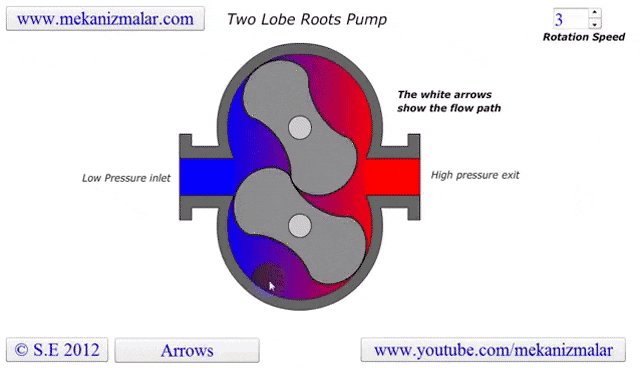
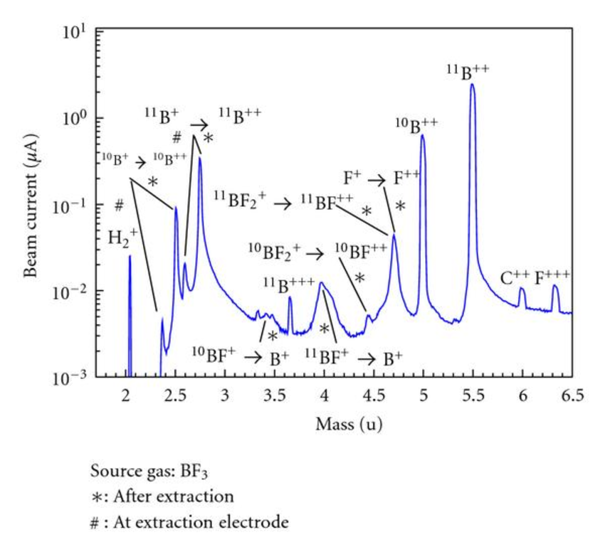

Connections (Joints) and Valves
This article can be described as a general summary of John O'Hanlon's A User's Guide to Vacuum Technology (Goodreads, Amazon) without most of the math and models used. Some sections are completely skipped over: pump fluids, materials in vacuum, lubrication. O'Hanlon's book is a comprehensive resource on vacuum technology, especially as related to semiconductor processing. Other resources are used where O'Hanlon's textbook is lacking in quality or mention, i.e., it is not discussed in the book.
Pressure is defined by the simple equation:
\[P = \frac{F}{A}\]where \(P\) is pressure, \(F\) is force, and \(A\) is the area the force is exerted on. A common experiment to show this equation in-action is laying on a bed of nails: if \(F\) (the person's body) stays constant and \(A\) (the area of the bed) is large, the pressure exerted on the skin will be minimized, preventing penetration. But if it's a single nail...
Now that pressure has been shown with an actual body (literally!) of mass, what about pressure that is invisible, e.g., air?
From the Maxwell-Boltzmann distribution, which is used to find the distribution of the speeds of particles within an ideal gas, the N2 molecule at a temperature of 0 °C moves at a probable speed of:
\[v_{p, \text{N}_{2}} = \sqrt{\frac{2k_{B}T}{m_{\text{N}_{2}}}} = \sqrt{\frac{2(1.380 \times 10^{-23} \, \text{J}\cdot\text{K}^{-1})(273 \, \text{K})}{2 \times 2.33 \times 10^{-26} \, \text{kg}}} \approx 400 \, \text{m/s}\]where \(k_{B}\) is the Boltzmann constant, \(T\) is temperature, and \(m\) is the particle's mass.
The root-mean-squared speed is found by:
\[v_{\text{rms}, \, \text{N}_{2}} = \sqrt{\frac{3k_{B}T}{m_{\text{N}_{2}}}} \approx 500 \, \text{m/s}\]Quite fast! If a human got hit by a car going the same speed (900 mph, 1500 kph), they would surely die. The difference is the size of the object. The N2 molecule has an insignificant mass of \(4.6 \times 10^{26}\) kg, resulting in a insignificant kinetic energy and not noticing its collisions. However, the number density of gases is extremely high, leading to many collisions and the experience of pressure. Number density can be found using the ideal gas law:
\[\frac{n}{V} = N_{A} \times \frac{P}{RT}\]where \(N_{A}\) is Avogadro's constant, \(R\) is the gas constant, and \(V\) is a unit volume (either 1 cm3 or 1 m3).
Two others terms need to be defined:
There are two types of (relative) pressure:
Pressure has many units:
There are three flow regimes, based on the Knudsen number:
\[\text{Kn} = \frac{\lambda}{L} = \frac{k_{B}T}{\sqrt{2}\pi d^{2}PL}\]
With these flow regimes come more terms:
Vacuum is formally defined as "a space entirely devoid of matter." In regards to practical definitions, it is a space that has a lower pressure than its surroundings, all other variables kept equal.
There are ranges of pressure that correspond to specific "levels" of vacuum:
| Level | Pressure (Torr) | Pressure (Pa) |
|---|---|---|
| Atmosphere | 760 | 105 |
| Low vacuum | 760 to 25 | 105 to 3×103 |
| Medium vacuum | 25 to 10-3 | 3×103 to 10-1 |
| High vacuum | 10-3 to 10-9 | 10-1 to 10-7 |
| Ultra-high vacuum | 10-9 to 10-12 | 10-7 to 10-10 |
| Extremely-high vacuum | <10-12 | <10-10 |
| Perfect vacuum | 0 | 0 |

Technically, no.
Deep space is almost entirely devoid of particles, and there are surely volumes that can be outlined to exclude any surrounding particles, making them "perfect vacuum" volumes. However, there are still some elements contained within the chosen volume—photons, energy, and virtual particles all exist, preventing an absolutely-perfect vacuum from being achieved.
A group of German researchers have achieved up to (or down to) 10-14 Pa = 10-15 Torr using a cryogenic pump (paper here). Note that it is exponentially more expensive and time-consuming both to achieve and maintain higher-vacuum systems and arguably has diminishing returns (the thin film or image you produce will likely not be significantly better at 10-8 Pa = 10-10 Torr than it will be 10-7 Pa = 10-9 Torr).
Various gauges are used to measure pressure within a chamber. Direct-reading gauges directly measure the particle flux, while indirect-reading gauges measure values related to properties of the gas.

Liquid wall manometers use a U-shaped tube liquid to compare a known pressure to an unknown pressure. For example, if P1 is under an unknown vacuum and P2 is at atmospheric pressure, then P2 will "push" harder than P1, causing the P1 liquid level to rise and resulting in a pressure reading of:
\[P = \rho gh\]where \(\rho\) is the fluid's density and \(h\) is the height difference in the liquids.
Solid wall DRGs include the diaphragm gauge, the Bourdon tube, and capacitance manometer.
The capacitance manometer is a derivative of the diaphragm gauge, where the pressure reading is determined by the change in capacitance between the diaphragm itself and an electrode. Capacitance is found by:
\[C = \varepsilon \frac{A}{d}\]where \(\varepsilon\) is the permittivity of the medium, \(A\) is the area of the two plates, and \(d\) is the distance between the plates.
A pressure transducer is used to measure the pressure. A diaphragm is fixed between two miniature chambers, one at the unknown pressure, where the electrode is located, and one evacuated. As the pressure changes, the diaphragm moves in one direction, changing the capacitance the electrode senses and sending it to the tool. The diaphragm movement is extremely small, making it susceptible to temperature effects. To counteract this, some transducers are equipped with heaters to maintain a specific temperature.
The TGC measures pressure by measuring heat transfer between a wire and the closed-volume the wire is in. As pressure increases within a certain range, heat transfer also increases linearly, allowing an accurate, medium-vacuum pressure to be read if characterization is accurate.
To form a Pirani gauge, an already-balanced Wheatstone bridge is used, where one of the resistors is the wire that will be heated in the vacuum. Resistance increases with temperature:
\[R(T) = R_{0}\left(1 - \alpha(T - T_{0})\right)\]where \(R_{0}\) is the initial resistance at initial temperature \(T_{0}\), \(\alpha\) is the temperature coefficient, and \(T\) is the current temperature.
As pressure increases on the heating wire, the heat transfer increases (or heat loss occurs) and the resistance decreases. To rebalance the bridge, the voltage source must supply more voltage, thus reheating the wire back to its original resistance and rebalancing the bridge. The voltage can then be read into a transducer to measure the pressure. A compensating wire is used to offset any effects from temperature on the resistance zeroing of the heated wire.
The thermocouple gauge uses a thermocouple to measure the pressure: higher pressures decrease the wire's temperature. Characterizing this curve allows for accurate measurements.
Ionization gauges are used to measure ultra-high vacuum pressures. There are two types: hot cathode and cold cathode.
In the hot cathode, keeping the temperature constant allows the pressure to be read via the number of positive ions measured by the negatively-biased collector electrode.
In the cold cathode gauge, electric and magnetic fields present within the gauge increase ionization probability. Electron sources are also used to increase the initial number of starting electrons available to ionize the gases. The pressure range is a bit wider than the hot cathode gauge, allowing pressures from 10-9 to 1 Pa = 10-10 to 10-2 Torr to be read.
In addition to the atmosphere, gases are also present in solids. When released into the atmosphere, this increases the pressure and is called outgassing. Outgassing is caused by vaporization, desorption, diffusion, and permeation.
Vaporization occurs when the molecule's temperature is above its condensation temperature at a given pressure. Bake-outs are used to vaporize and remove volatile compounds from vacuum systems.
Diffusion occurs when a concentration gradient in a solid forces gas towards the surface, where the desorb (release from the solid's surface).
Desorption can be forced using electrons, ions, or photons.
Permeation is the adsorbtion, diffusion, and desorbtion of a gas on, through, then off the chamber wall.
The flow of a gas (which has mass) can be measured by applying heat to a gas flow and checking the temperature increase, which is proportional to the amount of mass flowing. Two types of thermal flow meters can be used: variable temperature and constant temperature. The variable temperature uses two thermocouples placed at either ends of the flow channel. After taking an initial temperature measurement with no gas flowing, gas is flowed through and the thermocouples take another temperature measurement, allowing for an accurate measurement of the mass flow. The constant temperature uses a circuit to maintain a constant temperature throughout the channel, where the applied power is proportional to the mass flow.
The mass flow controller (MFC) is an obvious progression from the flow meter. By adding a analog valve that can be fully open, fully closed, or anywhere in between, the amount of mass flowing can easily be controlled. The MFC must be calibrated to the specific gas that it will be used for or have a gas correction factor (GCF) added. For example, an N2-based MFC (the most common calibration standard) will have a GCF of 1 when flowing N2 and a GCF of 1.39 when flowing Ar. The GCF can be calculated or determined empirically.
While pumping speed has the same units as conductance, volume/time (m3/s, L/s), they are not the same: conductance is the property of the hardware, while pumping speed is dependent on the pump used, the current pressure, etc.
To measure a mechanical pump's pumping speed, the system is brought down to base pressure, \(P_{b}\), gas, typically N2, is flowed into the chamber for a number of minutes, and finally the equilibrium pressure, \(P_{\text{eq}}\) is found, giving a pumping speed of:
\[S = \frac{Q}{P_{\text{eq}} - P_{b}}\]Measuring the pumping speed of higher vacuum pumps, such as the turbo pump and cryo pump, require similar methods due to their lack of pumping capability at high flows.
Keep in mind that the calculated pumping speed is under idealized conditions. Instead, an effective pumping speed (EPS) is more accurate. Given a port conductance, \(C_{p}\), and ideal pumping speed, \(S\), EPS is calculated by:
\[\text{EPS} = \left(\frac{1}{C_{p}} + \frac{1}{S}\right)^{-1}\]From this equation, the smallest conductance results in the highest effective pumping speed given a fixed ideal pumping speed.
A few other, more practical methods are available for calculating EPS. Given a mass flow, MF, and pressure, \(P\), the EPS of either a transfer or capture pump is found by:
\[\text{EPS} = \frac{\text{MF}}{P}\]Another method for transfer pumps measures the throughput at the pump's exhaust then divides by the pressure within the chamber. This assumes no particles are lost between the chamber and exhaust, whether by condensing, a trap, etc. More calculations can be found here (where all of this EPS information was taken from).
Slow chamber pump times can be reasonable or indicative of an issue with the chamber or pump itself.
First, check if the pump time is reasonable:
After those three questions have been eliminated in the search for a faster pumping time, examine the possible issues:
In addition to all of this, the pump times should be recorded on a regular basis to check for any times that are out of the ordinary. For example, the times it takes to pump down from atmosphere to 100, 1, 10-3, 10-5, and 10-7 Torr may all be recorded over time. Pump time behaviors may be more noticeable and easily anticipated after certain events, like chamber cleaning or pump replacement.
More ideas on reasons for slow pump times can be found here.
Vacuum is achieved through the use of vacuum pumps. It is important to note that vacuum pumps do not "suck", nor is there is such a force as "suction". Gas molecules must randomly make it to the intake to be removed. This is why pump speed decreases with pressure—as the number of particles within in the chamber decreases, so does the probability of one entering the intake.
Mechanical pumps are used to achieve low to medium vacuum and back high vacuum pumps. Some use oil, while others are "dry" (oil-free).
The rotary vane pump has a simple operation: gas enters through an intake, is compressed by a rotating vane, then removed through an exhaust on the other side. Oil is used to help lubricate the vanes. Some rotary vane pumps can be used in two stages, where the exhaust of the first is directly connected to the intake of the second. The two-stage option has higher pumping speeds and can achieve lower pressures than the one-stage. For both options, it is crucial that the seal separating the intake and exhaust is tight. Any leak will significantly worsen the pumping speed and achieveable pressure.
The rotary piston pump is similar to the rotary vane pump.
The lobe blower uses two rotors to force gases in either direction, improving the pumping speed and and base pressure as compared to the rotary pumps. As the pressure differential between the inlet and outlet increases, the rotors must work harder to pump the gases, causing heat to be generated and the rotors to expand, possibly destroying the pump. To prevent this, an overflow valve is included to act when the manufacturer's recommended maximum pressure differential value is exceeded. Because this maximum differential would be exceeded if the lobe blower was used on a chamber at atmosphere, it must be used with or as a backing pump.
Some lobe blowers are outfitted with a cooler to offset the heat generated by the pump. Gases that make it past the rotors go through a cooler. A fraction of those go back into rotor's chamber to promote cooling, while the remaining continue on to be exhausted.
The claw pump is similar to the lobe blower, but uses "claws" instead of the figure-eight rotors. This configuration compresses the gas within the pump, forcing it through an outlet.
The scroll pump is composed of two identical helical structures, one of which moves around its stationary counterpart. Gas is introduces at an opening and makes its way to the center's outlet, getting progressively compressed along the way. They are used to back turbo pumps or independently where low vacuum is needed.
The screw pump is similar to the scroll pump, using two screws that rotate opposite from one another at the same speed. This transports gas from the inlet to outlet. They are used to back turbo pumps and on systems where corrosive gases are present (the screws can be coated in a corrosion-resistant material).
The diaphragm pump is simple: gas enters through an inlet after the diaphragm is at the bottom of its movement and is expelled when the diaphragm moves up. Valves at the inlet and outlet prevent gas from going opposite directions (gas going back in the inlet when it should only go through the outlet). They can be used independently to achieve medium vacuum or as backing for a turbo pump.

A summary of mechanical pumps can be found in the following table. The "Purpose" column indicates what the pump is used for, e.g., pumping systems on its own (independent), backing high vacuum pumps (backing), or in combination with another pump (combination). For combination-type pumps, the pump it is combined with is noted in parentheses. The "Backing Needed" indicates if the pump needs another pump backing it.
| Type | Minimum pressure (Torr) | Minimum pressure (Pa) | Purpose | Backing Needed? |
|---|---|---|---|---|
| Rotary vane | 10-5 to 10-2 | 10-3 to 1 | Individual, backing | No |
| Rotary piston | 10-2 | ∼1 | Individual, combination (lobe) | No |
| Lobe blower | 10-5 | 10-3 (Lobe-rotary combination) | Combination (rotary) | Yes |
| Claw | 10-3 to 10-2 | 0.1 to 1 (Craw-lobe combination) | Combination (lobe) | No |
| Scroll | 10-2 | 1 | Individual, backing | No |
| Screw | 10-2 | 1 | Individual, backing | No |
| Diaphragm | 0.1 to 1 | 10 to 100 | Individual, backing | No |
Turbo pumps are used to achieve high vacuum and require a backing pump (rotary vane, screw, scroll, or diaphragm) because they must operate in the molecular flow region. The pumping speed is high, hydrocarbons are prevented from entering back into the chamber without the need for a trap, and oil is not required for either of the pumps. They are an attractive option for high vacuum system.
There are two types of alternating rotor blades within the turbo pump: rotor (rotating) blades and stator (stationary) blades. As rotor blades "hit" the gas molecules, the gas is compressed and forced deeper into the pump, closer to the outlet. The number of rotors can go from 8-20 and may have multiple stages: the first stage's blades are thin, allowing a high pumping speed and low compression ratio, while the remaining stages get progressively larger, resulting in high compression ratios and low pumping speeds at the outlet, near the foreline. The primary way to achieve this is by changing the blade angles. The more "open" a blade is, the more likely gas is to enter that individual set of rotors, resulting in higher pumping speeds, but lower compression ratios. Regardless, each stage is designed such that the flow is constant.
In an effort to move away from oil-based backing pumps, a molecular drag stage has been added at the end of the turbo's blade to further decrease pressure to an allowable value for dry backing pumps.
One variation of the turbo pump is the magnetically-levitated turbo pump. To prevent frictional wear on the bearings supporting the rotors, a magnetic bearing is used.
The ultimate pressure is determined by the compression ratio of light gases (based on pump configuration), specifically H2, and amount of outgassing, especially if oil is used is the backing pump. Ultimate pressures of 2×10-8 to 5×10-9 Pa = 1.5×10-10 to 4×10-11 Torr have been achieved using a system bake and a high-compression turbo pump.
The diffusion pump works by vaporizing a fluid, generally oil, and directing it in a certain pattern (stream) using jet nozzles. This stream collides with gases and forces them to downwards, where the pressure is higher, thus compressing them. There are multiple compression stages. As the vapors hit the side walls, they are cooled until condensation and returned to the boiler to repeat the process.
A roughing pump, generally rotary vane pump, rotary piston pump, or one of those two in combination with a lobe blower, must be used, as both the boiler and pump itself cannot handle atmospheric pressure.
Backstreaming of the vaporizing fluid, especially those with high vapor pressures, into the chamber is an issue. The most common methods of preventing backstreaming are the use of low vapor pressure fluids and cold traps and/or baffles.
Cryogenic, meaning low temperature, pumps work using the principle of cryocondensation, cryosorption, and cryotrapping.
Because vapor pressure follows a parabolic curve against temperature, vapor pressure decreases with decreasing temperature. Residence time is also a factor. Given that residence time is proportional to \(\exp(1/T)\), extremely low temperatures correspond to extremely long residence times, which practically removes the condensed vapor from the system. The system uses no oil, making backstreaming non-existent and the pumping itself clean.
Regeneration is the process of releasing the condensed gases. To do this, the surfaces that the condensed particles are on must be warmed up to allow evaporation either directly into an exhaust or a roughing pump. Most cryopump are designed such that the chamber is isolated from the pump during regeneration, else backstreaming of the already-condensed particles may occur.
Liquid nitrogen and helium are the most common coolants used. The surfaces used for pumping are directly connected to the liquid refrigerators.
Ion and getter pumps operate similarly to the cryopump: gases are captured and then transported to a surface, removing them from the system.
In the getter pump, a reactive metal is used within the chamber to react with (getter) a present gas. Two mechanisms allow this: a reaction that forms metal compound (TiO, TiN, etc) or the diffusion of the gas into the metal. The metal sublimation pump (MSP) generally uses Ti, as it easily sublimes and is relatively cheap. By heating a Ti filament at a low pressure, Ti sublimates and get deposited throughout the chamber. The ambient gases are captured by the Ti, effectively pumping it from the system. The nonevaporable getter pump (NEGP) uses the diffusion of gases into its getter as the pumping mechanism. Given that diffusivity increases with temperature (based on the Arrhenius equation), the NEGP operates at higher temperatures than the MSP.
The ion pump follows a similar principle to the residual gas analyzer. The pumping is done using a pressure gauge, like the Bayard-Alpert gauge. Electric and magnetic fields are designed to maximize the distance electrons travel, increasing the likelihood of the ionization of gases. The mean free path must also be sufficient. After ionization occurs (the gas molecules lose an electron), they have a net positive charge and are attracted to the cathode, where they can become implanted and removed. The anode may also be coated with a getter metal to promote further pumping of non-ionized gases.
A summary of high vacuum pump capabilities can be found in the table below. Note that the minimum pressures depend heavily on the vacuum system's design.
| Type | Minimum pressure (Torr) | Minimum pressure (Pa) |
|---|---|---|
| Turbomolecular | 10-10 to 10-7 | 10-8 to 10-5 |
| Diffusion | 10-7 | 10-5 |
| Cryogenic | 10-9 | 10-7 |
| Ion/Getter | 10-9 to 10-8 | 10-7 to 10-6 |
Permanent joints are generally formed using welding, specifically tungsten inert gas (TIG, most common), plasma arc welding, electron-beam welding, or laser beam welding.
TIG works especially well on stainless steel, which is the most commonly used material in high vacuum systems. It is vitally important that the weld is of high quality—if not, gas may become trapped inside a gap on the vacuum side and cause a virtual leak. To minimize the possibility of a virtual leak forming, the weld should be made on the vacuum side if possible. Additionally, the welding material, i.e., the two pieces of hardware to be welded together, should be free of cracks and grease and as smooth as possible. If this is not possible, the weld beginning on the atmosphere side should go all the way through to the vacuum side.
Soldering is another option of joining two metal parts together, but the use of flux poses issues, as it is generally a high vapor pressure material.
Brazing is the last permanent metal-metal joining option. The brazing alloy (the material used to connect the two metal pieces) is generally silver-based or nickel-based.
In order to create viewports to see into the chamber and feedthroughs, glass or ceramics need to be joined with metal. In order to join glass and metal, the thermal expansion value of both the glass and metal must be similar. Glass typically has a low expansion coefficient (fused quartz = 0.55, Pyrex glass = 4.0, source), while metals have higher coefficients (stainless steel = 14-17, aluminum = 21-24, source). To better facilitate the connection, alloys have been made to serve as a buffer layer between the glass and metal, allowing a better seal. To join the ceramic and metal, the ceramic is metallized at the connection points then brazed with the metal.
While a properly-welded joint is the most ideal, it does not allow for easy access, modification, or troubleshooting like a removable joint does.
First, the vacuum flange variation must be understood. The three most common flanges used are the CF, KF, and ISO. The CF flange uses two identical flanges and a metal (Cu) gasket to make the connection and seal. The metal will expand due to the flange's knife edge, forming the seal. Silver-plated gaskets can be used on systems that are subject to frequent baking and aluminum gaskets can be used on systems with low baking temperatures (<200 °C). Pressures can range from atmosphere (105 Pa = 760 Torr) to extremely-high vacuum (10-10 Pa = 10-13 Torr). Temperatures are limited by the gasket material used.
The KF flange uses two identical flanges and an O-ring to make the connection and seal. Grooves within the flanges allow the O-ring to be seated uniformly and reliably. However, the O-ring material severely limits the operating pressures and temperature it operates at. For example, Viton O-rings have a temperature range of -26 °C to 200-230 °C. Additionally, the O-ring used should be chosen based on the gases and materials used in the system. Corrosive gases may cause the O-ring to deteriorate, possibly resulting in a dangerous leak. The ISO operation principle is almost identical to the KF flange, except for the use of a stronger external retainer that holds the O-ring in place. The O-ring still limits the pressure and temperature ranges the flange operates at.
In order to connect thin tubes, like those use for process gas delivery, a compression fitting must be used to make the connection. The current industry standard is the Swagelok brand.
Before performing any leak testing, the system's pressure characteristics should be characterized: its pressure vs. time curve, base pressure, base leak rate (most chambers will have some type of leak rate if they're not being actively pumped), and base RGA results.
There are two types of leak detectors: the forward-flow (FFLD) and counter-flow (CFLD). Both use mass spectrometers (MS) calibrated to helium to detect leaks.
The FFLD consists of two vacuum pumps (turbo and roughing), pressure gauge, MS, and inlet port, as well as appropriate valves to isolate the pumps at allowed pressures. The system is pumped down to high vacuum, then He sprayed around possible leaks. A LN2 trap is used to prevent non-He particles from reaching the MS.
The CFLD has a similar setup to the FFLD, but the MS is at the inlet of the turbo pump and there is no need for a LN2 trap. The pump must have low compression ratios for He and high compression ratios for all other gases. This allows the high-ratio gases to be pumped more easily and not reach the MS, while He is not and reaches the MS more easily.

The system being tested should be isolated one part at a time, eliminating sections systematically.
First, the pump. Can the tool be brought down to basic roughing pressure? If not, there may be a leak or the pump needs to be serviced. Connect the pump directly to a gauge and check the pressure. If it fails to reach the expected pressure, the pump is likely bad. If it is as expected, move to checking the roughing line and foreline. Reconnect the pump and check each of those for expected base pressure.
If neither the roughing pump, roughing line, nor foreline pose any issues, move to the main process chamber. Attempt to pump the chamber down to base pressure. If it fails to reach the expected pressure, there could be a few issues: bad high-vacuum pump, outgassing, and bad pressure gauge are all possible issues. Check the pressure on the pump side of the gate valve. If the pressure is low, then the pump is likely operating fine and there is a problem within the chamber itself. Outgassing will eventually stop, so continue pumping for a number of hours to eliminate that as a possible cause. Cleaning the chamber shields will also decrease outgassing.
Once the high-vacuum pump and outgassing are eliminated as possibilities, the leak detector can be used. Begin at the top of the chamber with connections and work down. Once the chamber has been checked, other options may be examined using an RGA.
Mass flow controllers (MFC) can pose issues by allowing gases into the chamber. If the tool is used for deposition, this is easily verified by running a non-reactive gas process, such as sputtering with only Ar and analyzing the results via x-ray photoelectron spectroscopy (XPS). If there is significant O2/N2 present in the film but the O2/N2 MFC valve was closed, there may be a leak through the MFC. This should be another characterization performed at regular intervals: when the system is verified to have no leaks, what does the XPS analysis yield for a standard process not using any additional gases.
After the entire tool has been checked and eliminated, leaks should be checked all the way back to the gas cylinder (essentially closing the system). The RGA will likely also verify the leak is coming from the atmosphere. The analysis should yield higher values of N2, O2, etc. Close the gas cylinder and evacuate the gas lines through the leak detector, then begin He testing. It may take a bit for the He to travel from the leak location to the MS, so wait a number of seconds (up to 30 s), between He injections.
Residual gas analyzers (RGA) are simply mass spectrometers used for finding the composition of gases within a volume, e.g., vacuum chamber. "Finding the composition" has a variety of uses:
RGAs work by measuring a particle's mass-to-charge ratio, M/z, where M is the mass in atomic mass unit (or Da or u) and z is the charge of the cation (positive ion) formed. Most cations have a charge of +1, so the ratio ends up equaling the mass. (Note that the particle can be a simple monotomic or diatomic element, such as Ar or O2, or compound, like CO2.)
The RGA's mass spectrometer consist of three parts: an ionizer, mass filter and detector.
Either an open (in main vacuum region) or closed (isolated from main vacuum region) ion source, the ionizer uses the principle of electron ionization (an electron strikes a particle, causing one of its valence electrons to become unbounded and the particle to become an ion) to ionize particles within its vicinity. Open ion sources eject electrons across the chamber towards an anode, allowing the electrons to ionize gases along the way. However, given that the size of the gases are not the same, larger gas molecules are more likely to get ionized, decreasing the accuracy of the RGA. In a closed ion source, gases flow through a tube where they are ionized inside.
There are two common types of mass filters: the magnetic sector and radio frequency quadrupole (RFQ). The magnetic sector uses a magnetic field to curve the various species orthogonally from their original path, using the equation:
\[qvB = \frac{mv^{2}}{r} \to r = \frac{1}{B}\sqrt\frac{2mV_{ext}}{q}\]Where \(B\) is the magnetic field strength, \(m\) is the species' mass, \(V_{ext}\) is the extracting voltage, \(v = \sqrt{\frac{2qV_{ext}}{m}}\) is the ion velocity, and \(q\) is the species' charge. Depending on the species' mass, some may go less than, equal to, or greater than the desired angle.
The quadrupole uses four identical cylindrical rods of opposing charges evenly spaced from a center. A band-pass filter is created via the positive rods (high-pass filter) and negative rods (low-pass filter). In this case, the filtered frequency is actually mass.
The detector used is generally a Faraday cup. An electron multiplier may also be used in addition to the Faraday cup if the current is too small.
When a molecule ionizes, it dissociates, "cracks", or fragments into multiple isotopes. For example, the BF3 gas dissociates into BF2+, BF+, F+, F+, and so on. Same with CHF4: CH3+, CH2+, CH+, and other isotopes result.
As discussed in the leak detection section, examining the spectra of a tool's chamber can point to issues. Take a spectrum that includes a large peak at \(m = 28\) (assuming \(z\), the degree of ionization, is 1). This can include two molecules: CO (12+16=28, resulting from dissociation of CO2) and N2 (14+14=28, present in atmosphere). Other relevant masses should then be examined: N+, C+, etc. If N+ contains a peak and C+ does not, then N2 is more likely to be the contributor to the \(m = 28\) peak. More examples of cracking patterns' \(m/z\) ratios and relative percentages can be found here.
For systems that require a backing pump for the high vacuum pump, considerations must be made about the roughing pump.
Pumping speed should take into account economical and process factors. Is this a shared-user or high-throughput facility? If so, then the pumping speed should be on the higher end to accommodate. How important is the cleanliness of the process? If highly important, then the pumping must be controlled to prevent water from forming within the chamber. (O'Hanlon claims that Jun Zhao details this procedure in his dissertation Thermal Dynamics and Particle Formation During Vacuum Pump-down, but the document is not available online for verification.)
The other consideration is when to switch over to the high-vacuum pump. Pumping to too high a vacuum can cause backstreaming from the roughing pump, while too low a vacuum can prevent the high vacuum pump from performing properly and may even damage it. By this, there exists a range of pressures that allow the switching to take place. Keep in mind that the low vacuum region is different for each of the four previously-discussed high vacuum pumps.
In the separate line turbopump system, there is a dedicated roughing line, foreline, and gate valve to the chamber. Venting occurs directly into the chamber.
To begin pumping down the separate line system from atmosphere, the gate valve (also called the high vacuum valve, labeled "PC High Vac Valve" in the figure) is closed to prevent the full-speed turbopump from being exposed to high pressures. The foreline valve ("PC Turbo Backing Valve" in the figure) is also closed. The roughing line that directly connects the roughing pump to the chamber is opened via the roughing valve and the chamber's pressure begins to decrease. Once the system is at an adequate pressure (see Rough Pumping section), the roughing valve is closed. The foreline valve is then opened, followed by the high vacuum valve directly into the chamber. The system then looks like it does in the figure: gas is being removed by the turbopump where it enters the foreline and is then picked up by the roughing pump, where it exhausts the gas.
To vent, all valves into the chamber are closed and the vent valve opened. This flows in either dry N2 (preferred), or clean, dry air (CDA, not preferred).
In the single line turbopump system, there is no roughing line nor high vacuum valve. Venting occurs directly through the turbopump.
To begin pumping down the separate line system from atmosphere, the foreline valve is opened to allow the roughing pump to pump the system. Once the system is at an adequate pressure, the turbo pump is turned on and allowed to accelerate to maximum speed.
To vent, the turbo pump speed is set to 0 and allowed to slow down. This can take a long time, as the pump is slowing down in high vacuum. Once it's a sufficiently-low speed, the vent valve can be opened to flow the vent gas into the turbopump. This artificially slows the turbopump while also increasing the chamber pressure to atmosphere.
This constant starting and stopping of the turbopump is not healthy and significantly increases the wear on the pump. Venting it too quickly can cause damage, as seen from the figure in the Turbomolecular Pump section.
As discussed in the diffusion pump section, a mechanical pump must be used prior to the diffusion pump. A high vacuum valve is thus required. Traps are commonly used.
The pump and valve sequences for pumping are similar to those of the turbopump system: the roughing pump decreases the pressure through the roughing line with the foreline valve closed, followed by roughing valve closing and the foreline and high vacuum valves opening to allow the diffusion pump to begin pumping.
To vent, the high vacuum valve is closed and the trap and pump are allowed to warm. Once the pump reaches a set temperature, the foreline valve is closed and both pumps can be vented along with the chamber.

The cryopump system is quite similar to the diffusion pump system: the roughing pump roughs the system through the roughing line, then the gate valve is opened to allow the cryopump to pump the chamber down to high vacuuum. Venting is done by closing the high vacuum valve and flowing in N2 or another substitute gas.
To regenerate the pump, N2 can be flowed in to warm the captured gases while the roughing pump is pumping. Any vaporized gases will simply be pumped out. Regardless the method, some type of heating and backing pump must be used to vaporize and remove the captured gases.
Since ion pumps do not need a backing pump, a roughing pump (generally a sorption pump or scroll pump) is used for rough pumping, then isolated to allow for the ion pump to pump independently.
Almost all high vacuum chambers are made of stainless steel.
Materials after that should be chosen for their permeability, temperature rating, pressure rating, outgassing rate, and so on, based on the materials, temperatures, and pressures the chamber will be exposed to.